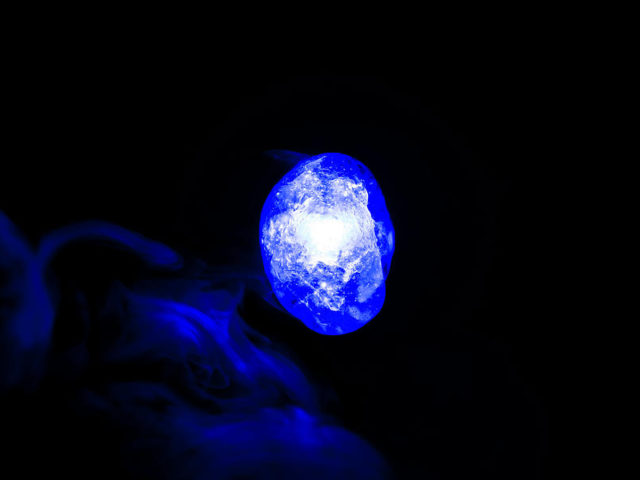
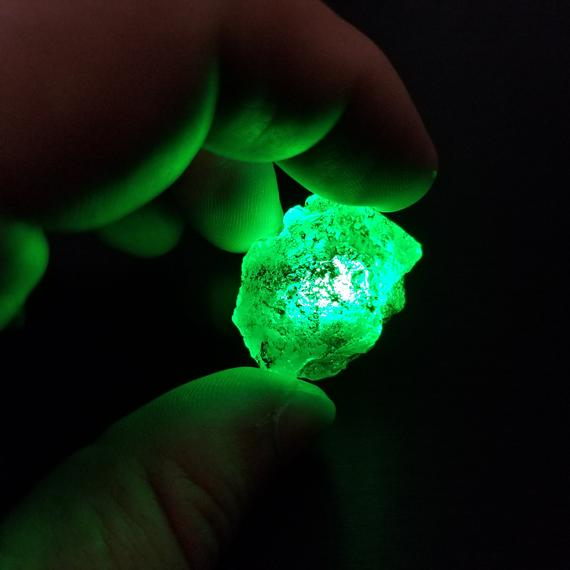
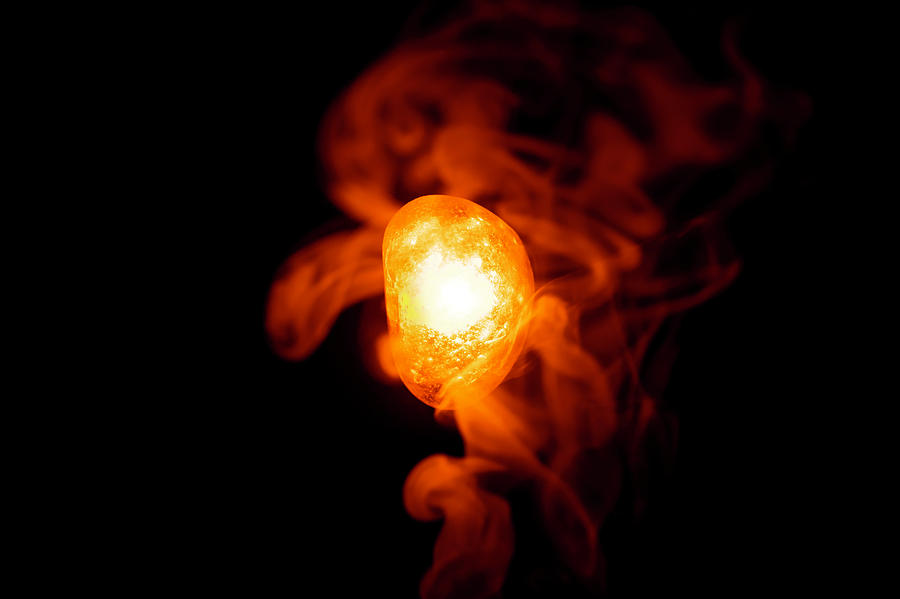
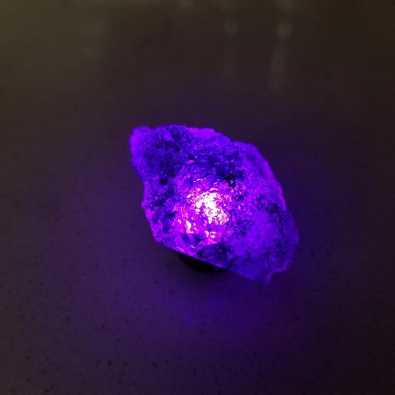
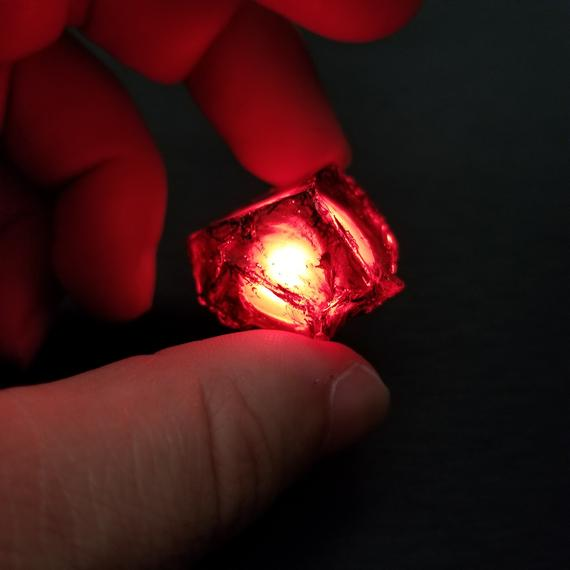
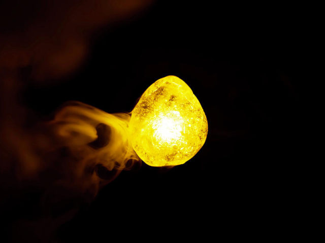

| Name | Color | About | Images |
|---|---|---|---|
| The Space Stone | Blue Stone | The Space Stone gives the user power over space. Anyone holding the Space Stone can create a portal from one part of the universe to another. In the Marvel films, the Space Stone is hidden inside a blue cube called the Tesseract. |  |
| The Time Stone | Green Stone | The Time Stone grants its owner the power to re-wind or fast-forward time. Stephen Strange (Benedict Cumberbatch) discovers it in the Eye of Agomoto pendant in the library of Kamar-Taj, where he trains in the mystic arts in Doctor Strange. |  |
| The Soul Stone | Orange Stone | In Infinity War, Thanos travels with Gamora to the planet Vormir, where the Soul Stone is kept. There they encounter Red Skull, the villain from the first Captain America movie, who has been doomed to guard but not use the Soul Stone after trying to handle the Space Stone himself. Red Skull tells Thanos that he needs to sacrifice something he loves to attain the gem, and Thanos kills Gamora. |  |
| The Power Stone | Purple Stone | The Power Stone bestows upon its holder a lot of energy—the sort of energy that you could use to destroy an entire planet. Star Lord (Chris Pratt) accidentally discovers the stone in Guardians of the Galaxy. Ronan the Accuser (Lee Pace) steals it from him and threatens to wipe out an entire race. |  |
| The Reality Stone | Red Stone | The Reality Stone grants the user power to manipulate matter. In Thor: The Dark World the villain Malekith (Christopher Eccleston) wants to use this red liquid stuff called Aether to turn matter into dark matter because he’s evil…and do you really need a better reason? It turns out that the Aether is a manifestation of the Reality Stone. |  |
| The Mind Stone | Yellow Stone | The Mind Stone allows the user to control the minds of others. We first see it as a blue orb in Loki’s scepter in 2012’s The Avengers. Whenever Loki touches someone with the scepter, he can control what they do. Thanos gives the Mind Stone to Loki, which places a lot of faith in Loki, a hilarious but not particularly accomplished villain. Weird decision, Thanos. |  |